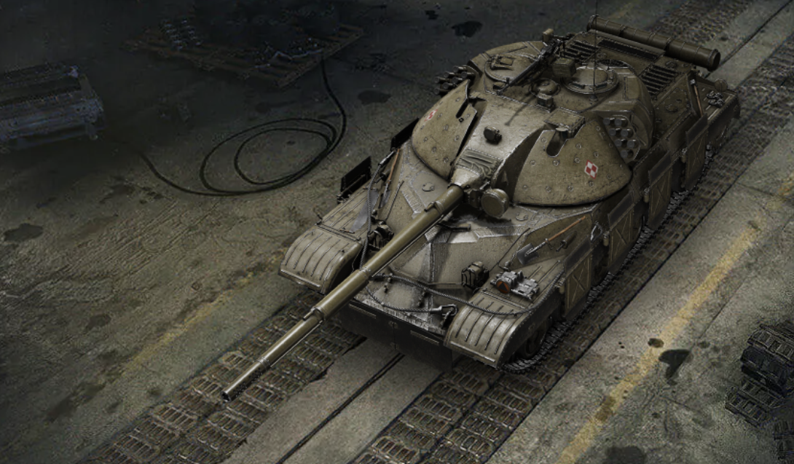

До бою, студенте!
Нові танки ХІ рівня:

Особлива навичка
Тактичне посилення: залежно від активного режиму й рівня заряду машина може активувати одне з двох умінь: іонний форсаж (підвищує потужність двигуна й швидкість) або електромеханічний далекомір (зменшує розкид і час перезаряджання, поліпшує точність).
Переваги та недоліки:
- Бойова універсальність
- Ефективність у флангових атаках
- Гнучкий боєзапас
- Непогана міцність
- Слабке бронювання
Грай на новому рівні!